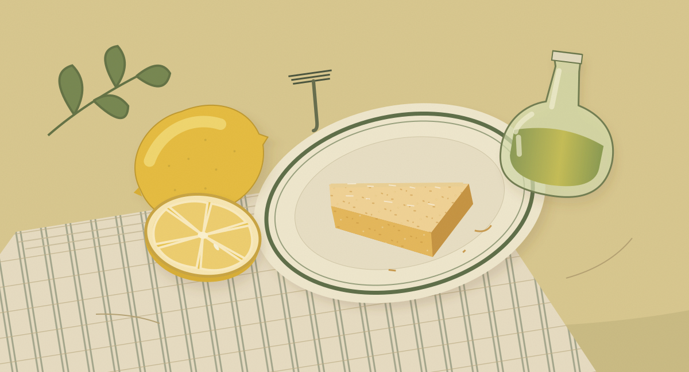

At the kitchen table
A note from our fictional editor
A cake for the middle of the table

A cake in the middle of the table is an invitation with very few instructions. Bring a plate. Move the cups a little. Cut a second slice if the conversation runs long.
This notebook begins with a lemon: the peel we notice first, the juice we measure, and the scent left on our hands. Beside it is a small exercise in sharing a recipe—how much to set out when four becomes eight.